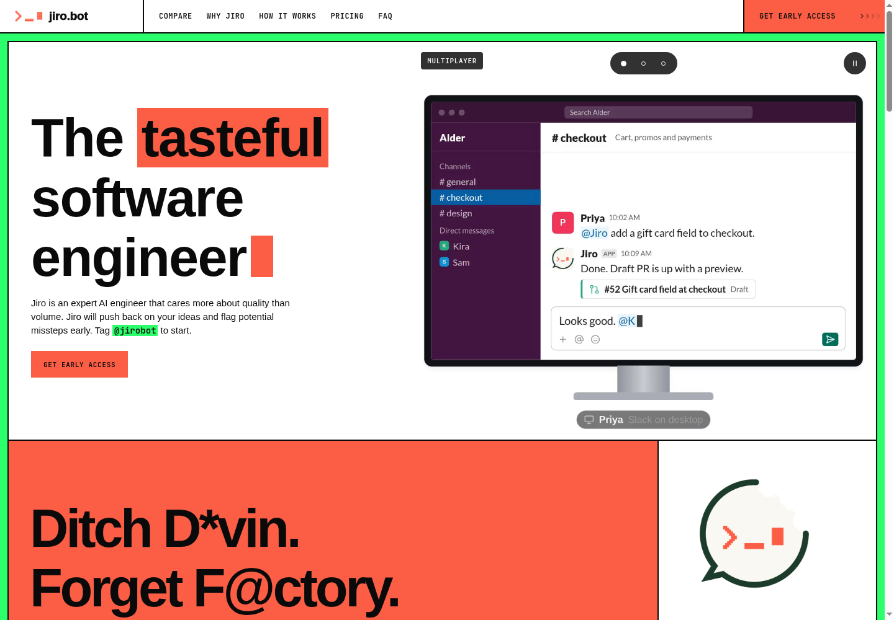

Desktop and mobile captures after scrolling every major section, with normal motion enabled. Shared logos and page artwork remain. See browser-proof.json for console and request results; initial base has two missing Söhne font files.
